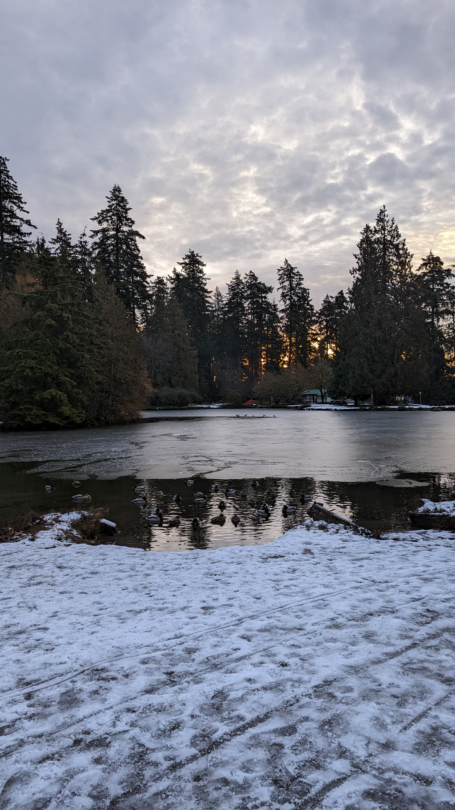

field recordings
back in the forest
Sorry, your browser doesn't support html5!
recording 41 (murder of crows)
recording 40 (rooster @ 0:15)
recording 39 (6am in Kilifi)
recording 38 (still live from the motherland)
recording 37 (live from the motherland)
recording 36b (call and response)
recording 36 (starts at water)
recording 35 (plane @ 1:15)
recording 34 (birds by the water)
recording 33 (mallard @ 0:38)
recording 32 (message from the recorder)
recording 31 (playing birds)
recording 30 (snowsteps but in -40C)
recording 29 (snowsteps)
recording 28 (cityscapes)
recording 27 (train @ 0:35)
recording 26 (water feature)
recording 25 (mallard @ 0:11)
recording 24 (murder of crows following)
recording 23 (pedestian energy)
recording 22 (crow calling its squad @ 0:16)
recording 21
recording 20
recording 19
recording 18 (squirrels running down tree @ 0:33)
recording 17
recording 16
recording 15
recording 14
recording 13
recording 12
recording 11
recording 10
recording 9
recording 8
recording 7
recording 6
recording 5
recording 4
recording 3
recording 2
recording 1
warning: may contain woodwinds but mostly just birds
Sorry, your browser doesn't support html5!
wind
wind 2
wind 3
wind 4
wind 5
wind 6
wind 7
wind 8(bandstand)
wind 9(bandstand)
wind 10(bandstand)
wind 11
wind 12
wind 13
*wind 14 (transition into ocarina)
wind 15
wind 16(bandstand)
wind 17(bandstand breath exercise)
wind 18(birds only from 3:20)
wind 19(bandstand)
wind 20
recorded by BUSHSK8R
download for use
